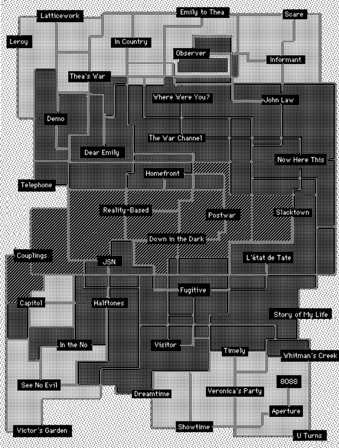

Moulthrop was born in Baltimore, Maryland, where he lived (growing up and coming back) for more than 30 years. He was educated at the George Washington University and Yale, and has taught at the University of Texas, the Georgia Institute of Technology, and the University of Baltimore. These days he is Distinguished Professor of English at the University of Wisconsin-Milwaukee and Co-PI of the Digital Cultures Collaboratory. He has been writing digital fictions of one kind or another since the mid-1980s. Victory Garden 2022 is his twentieth published creative work. Moulthrop’s scholarship includes Traversals, an argument for preservation of early works of electronic literature written with Dene Grigar, and Twining, a critical and creative exploration of the Twine writing tool, with Anastasia Salter.
Innovator of Hypertext Fiction

Full sized map of the classic Victory Garden
The classic Victory Garden was one of the first efforts of the so-called Eastgate School, following Michael Joyce’s afternoon: a story (1990) and preceding John McDaid’s Uncle Buddy’s Phantom Funhouse (1993), Deena Larsen’s Marble Springs (1993), Shelley Jackson’s Patchwork Girl (1995), Bill Bly’s We Descend (1997) and Richard Holeton’s Figurski at Findhorn on Acid (2000). Though most of his schoolmates chose to graduate, Moulthrop happily stayed behind, writing fictions for the World Wide Web, including Hegirascope (1995-1997), which features a time-limited reading scheme that would reappear, independently and more momentously, in Anna Anthropy’s Queers in Love at the End of the World (2013).
Full sized map of the classic Victory Garden
Experiments in Net Art
Around the turn of the century Moulthrop produced a series of projects using imaging and animation technologies, beginning with Reagan Library (1999), which features a rendered 3D space explorable through panoramic graphics, and a series of pieces created with Adobe Flash, including Pax (2003), Radio Salience (2007), Under Language (2008), and Deep Surface (2010). Many of these works had game-like features. Under Language may actually count as a game or puzzle. Some, like Pax and Marginal Effects (2004) experimented with radical approaches to interface design. Others, from Reagan Library to End of the White Subway (2016), have probed the possibilities of algorithmically generated text.